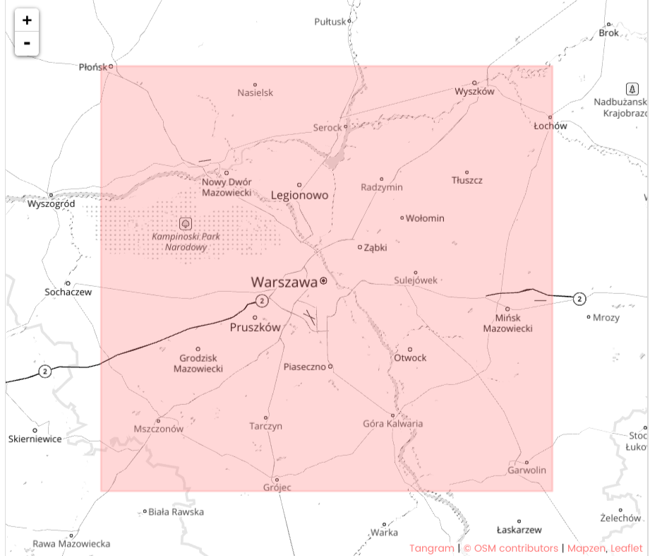

Ioannis Karakasoglou Breier

OpenStreetMap is a free, editable map of the whole world that is being built by volunteers largely from scratch and released with an open-content license.
The OpenStreetMap License allows free (or almost free) access to the map images and all of the underlying map data. The project aims to promote new and interesting uses of this data.
The data is stored in XML format and is generated by different users and therefore prone to many errors.
In this Project, I choose a map of Warsaw from the OSM and use data munging techniques to: